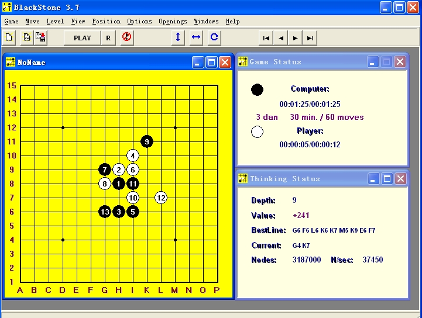

黑石382绿色免安装版测试
#1 黑石382绿色免安装版测试 作者：杰 发表时间：2009-9-22 18:23:50
如题。。。。。。 wrenju382.rar
wrenju382.rar
vista下不能使用
［ 索非亚 于 2009-9-22 18:33:02 时花20金币送鲜花一朵］
［ 逆刃 于 2009-9-22 18:35:40 时花20金币送鲜花一朵］
#2 Re:黑石382绿色免安装版测试 作者：逆刃 发表时间：2009-9-22 18:35:30
测试了一下，好像计算还存在很大问题吧，计算力很弱，错误也多。先感谢LZ，等待改进!

#3 Re:黑石382绿色免安装版测试 作者：索非亚 发表时间：2009-9-22 18:39:07
=======上图对应的爱五子棋谱代码如下，以便你拆解：========
h8h9j10i9j9j8h10i11i10k10f9k7
======================================================
以此作为测试。白12是把设置改为3段水平思考下的走法，用时2分30秒。
#4 Re:黑石382绿色免安装版测试 作者：杰 发表时间：2009-9-22 19:59:00
我这里很正常。
你们的测试环境是。电脑上有没正常安装已注册的版本？
#5 Re:黑石382绿色免安装版测试 作者：索非亚 发表时间：2009-9-22 21:25:59
我请人帮我远程安装了3.82注册版的，难道跟这个有原因吗？
#6 Re:黑石382绿色免安装版测试 作者：极地剑客 发表时间：2009-9-26 22:27:36
反正我试了第一次下~很正常~然后关掉再打开~无论摆到第几手棋~什么局面~一律显示-231.............#7 Re:黑石382绿色免安装版测试 作者：极地剑客 发表时间：2009-9-27 7:17:58
今天早上开机试了一下更离谱~只摆了9手疏定(平衡局面下),结果就显示+247了~但是最佳线路和当前计算点都只显示算了三步~一直算到深度9~还是如此误判.#8 Re:黑石382绿色免安装版测试 作者：极地剑客 发表时间：2009-9-27 7:18:54
如果是单文件出的问题的话~建议做成LAST3.7那样的绿色版~不用打包成单文件~#9 Re:黑石382绿色免安装版测试 作者：小丸.net 发表时间：2009-9-27 11:59:25
测试过了，没啥问题了。回头做个汉化。
#10 Re:Re:黑石382绿色免安装版测试 作者：杰 发表时间：2009-9-27 17:29:01
也有可能为达到绿色免安装的要求，忽略了某些文件导致的。
没有修补原文件，补丁方面应没问题,
在一楼的附件解压后有个DLL文件，把这个放到安装后的目录里，可跳过注册界面直接使用。关键就是这个东西发挥作用，欢迎测试。
#11 Re:Re:Re:黑石382绿色免安装版测试 作者：极地剑客 发表时间：2009-9-28 16:35:08
引用：没看见这个DLL文件啊`
原文由 杰 发表于 2009-9-27 17:29:01 :也有可能为达到绿色免安装的要求，忽略了某些文件导致的。
没有修补原文件，补丁方面应没问题,
在一楼的附件解压后有个DLL文件，把这个放到安装后的目录里，可跳过注册界面直接使用。关键就是这个东西发挥作用，欢迎测试。
#12 Re:黑石382绿色免安装版测试 作者：叶昀 发表时间：2009-10-4 22:32:39
 很菜，还是我不会用
很菜，还是我不会用
#13 Re:黑石382绿色免安装版测试 作者：aabb 发表时间：2009-10-11 12:09:56
简单测试了一下：优势数值有很大问题。而且到了某一步后不能再计算了。#14 Re:黑石382绿色免安装版测试 作者：极地剑客 发表时间：2009-10-20 8:16:32
使用那个DLL补丁即可.#15 Re:黑石382绿色免安装版测试 作者：岳麓小棋后 发表时间：2010-8-22 19:03:55
360提示这个附件有木马
#16 Re:黑石382绿色免安装版测试 作者：极地剑客 发表时间：2010-8-22 20:07:33
楼上MMQQ多少~交往~合体~#17 Re:黑石382绿色免安装版测试 作者：岑小鱼 发表时间：2010-9-17 18:56:40
求手机版本黑石
#18 Re:黑石382绿色免安装版测试 作者：五子米猫 发表时间：2010-9-21 17:08:45
好像被捆绑了什么木马了...360安全卫士和诺顿防毒软件都报毒了.....
另外，软件有时候会计算一些很奇怪的点.....
#19 Re:黑石382绿色免安装版测试 作者：杰 发表时间：2011-3-16 21:32:07
DLL是伪造 系统 文件 劫持内存补丁，这是利用系统的的一个漏洞。 其 破解 原理就是 一般win 程序 运行时都要调用系统LPK.DLL文件（极少数可能除外），把程序破解的修改写入到制作LPK.DLL补丁 工具 （如dll型内存补丁生成器）后生成一个LPK.DLL文件，然后放到被补丁的 软件 安装文件夹里，当需要破解的程序运行时他就要调用系统文件LPK.DLL，先在程序安装的文件里找，找到了就调用，如果找不到再到win系统文件夹里找直到找到了为止，所以把补丁的LPK.DLL放在软件安装文件夹里比较优先，被破解的程序它不知道LPK.DLL这个文件是真是假，这就像一个人在黑夜里喝醉了酒老婆给人换了都不知道一样#20 Re:黑石382绿色免安装版测试 作者：杰 发表时间：2011-3-16 21:35:57
一些病毒也是利用这个原理攻击系统。所以杀毒软件会把破解文件当作病毒误报。#21 Re:黑石382绿色免安装版测试 作者：极地剑客 发表时间：2011-3-19 22:16:47
杰的形容解说很BT啊#22 Re:黑石382绿色免安装版测试 作者：洪城骄子 发表时间：2011-5-12 13:01:45
哈哈，感谢杰的解说！辛苦了！#23 Re:黑石382绿色免安装版测试 作者：猪无戒 发表时间：2011-6-1 10:48:04
此版本连坐标号的错误也没改过来,真有点遗憾!!#24 Re:黑石382绿色免安装版测试 作者：猪无戒 发表时间：2011-6-1 10:50:46
此版本就坐标号的错误还没有改过来,是有点让人感觉遗憾啊!
#25 Re:黑石382绿色免安装版测试 作者：无罪释放 发表时间：2011-7-11 19:00:57
360，说有马#26 Re:黑石382绿色免安装版测试 作者：小元 发表时间：2011-7-12 10:37:07
360已经被河蟹了#27 Re:黑石382绿色免安装版测试 作者：极地剑客 发表时间：2012-6-9 22:43:14
期待楼主改进一下这个版本